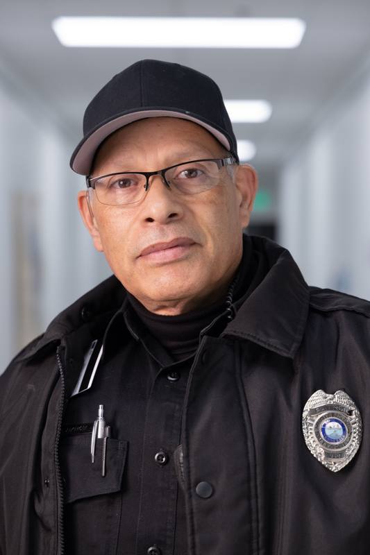
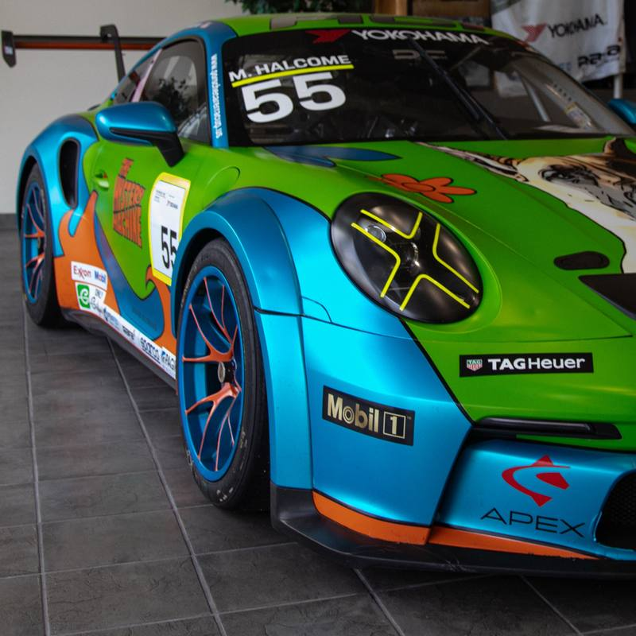
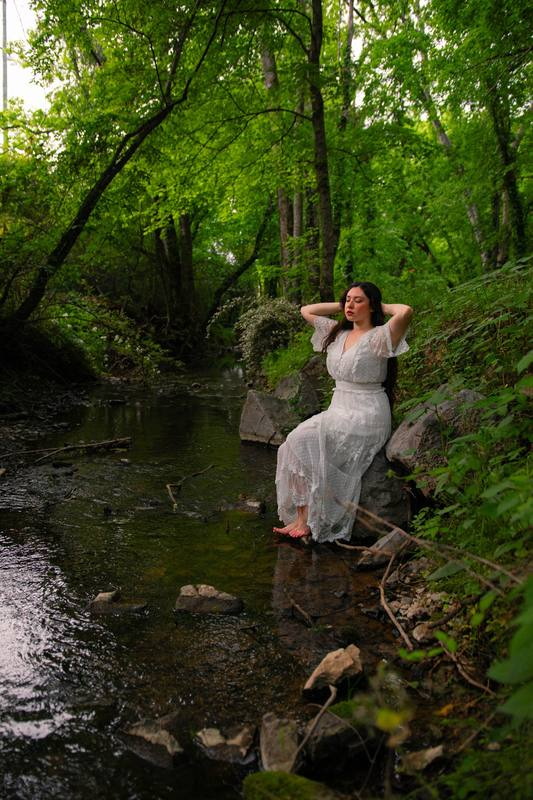
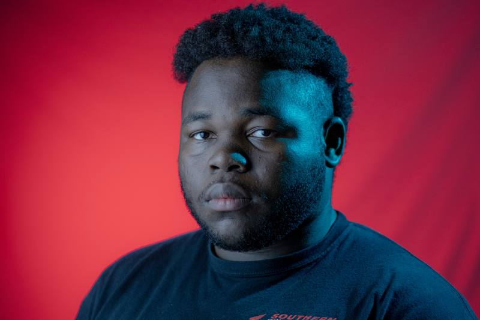

Orlando, Florida Live production Photo Video
Stories from the sideline to the edit suite.
I direct live shows, shoot with intention, and shape each edit around the story it needs to tell.
Showreel
A few seconds of everything.
Camera, edit, and direction by Kenneth Salmon.
3.4Msubscriber channel I edited videos for
3M+views per episode on that channel
80K+concurrent viewers on live broadcasts I directed
2019shooting and editing since
01
Selected work
Photography and video. Every frame shot or cut by me.
Events and sports / PhotographerCourtside

Portrait / PhotographerOn duty
Automotive / PhotographerPit lane
Portrait / Photo and lightingSprings Aerial / Drone pilotAbove the river
Studio portrait / PhotographerRed roomImages trade places every five seconds. Pause them by hovering over the gallery.
See all photographyExperience with
- Doctorly
- DermCollective
- Hope Channel
- It Is Written
- Camp Kulaqua
- Forest Lake Church
- Southern Adventist University
Have something in mind?
Let's make it happen.
Tell me what you're making, where it happens, and when you need it.